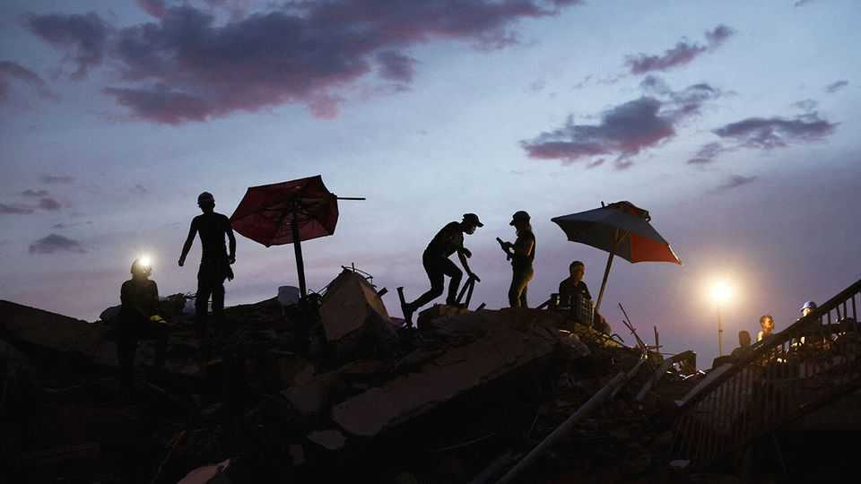

Unpacking Venezuela’s peculiar debt restructuring
Hazy numbers and the absence of the IMF make for an unusual negotiation
July 2nd 2026

THE EARTHQUAKEs in Venezuela on June 24th are a humanitarian disaster. They are also an economic calamity. Estimates suggest damage of at least $10bn, equivalent to a tenth of Venezuelan GDP, already diminished by years of mismanagement and corruption. It could cost ten times that. To make matters worse, they struck just as the interim government of Delcy Rodríguez, installed after America deposed her predecessor and boss, Nicolás Maduro, is preparing to renegotiate the country’s $240bn or so in debt. A deal would help clear the path for economic recovery—if it can be pulled off.
This will not be straightforward. The restructuring will be among the largest in history. In nominal terms the combined debts of the government and PDVSA, the state oil firm, are comparable to those of Greece, which defaulted on $260bn in bonds in 2012. Relative to GDP, they are twice as large.
The deal will also be peculiar. It involves a motley crew of creditors. And it does not involve the IMF—usually at the centre of sovereign restructurings. Moreover, observes Orlando Ochoa of the Oxford Institute of Energy Studies, a think-tank, “Two decades of administrative decay have depleted the skilled personnel required to navigate international financial negotiations.” Instead, the government is paying Centerview Partners, a Wall Street investment bank, a reported $150m to negotiate on its behalf.
Those in line for a payout include bond-holders ($60bn) and those owed interest ($40bn), whose identity is uncertain after institutional investors sold off Venezuelan paper to distressed-debt funds; suppliers holding unpaid invoices ($30bn); companies such as ExxonMobil whose assets were expropriated under Mr Maduro’s predecessor ($20bn); bilateral creditors like China and Russia ($10bn-20bn); and development banks ($4bn). Even if the last two groups are excluded from this restructuring, as the government confirmed in May, it will be hard to align incentives.
The IMF, which would normally help with such alignment, is increasingly distrusted by creditors and debtors alike. Its forecasts often look too rosy ahead of a crisis and too glum afterwards. Venezuela has not asked the IMF for money. Nor has it requested a debt-sustainability analysis, which the fund normally produces as an impartial arbiter. Instead, the government reportedly plans to release its own public-debt review in the coming weeks. Its impartiality will obviously be questioned.
The legal terrain in Venezuela is also rocky. Some of the debt, issued by Mr Maduro’s government but not endorsed by the National Assembly, may not even be legitimate. American creditors, almost certainly owed a big slug of the debt, need the blessing of the Treasury Department, which has eased sanctions on Venezuela since recognising Ms Rodríguez’s government but not lifted them entirely.
Given the debt’s vast size, creditors will need to make concessions. These may take the form of haircuts on principal, moratoriums on interest (which worked well in a recent large restructuring of Zambia’s debt) or maturity extensions. Just how much the owners of the obligations can expect to claw back will depend on how far and how fast Venezuela’s wrecked economy can be revived under new stewardship.
At the moment it is in tatters. Between 2012 and 2025 GDP contracted by two-thirds. But details about the economy’s actual state are scarce. The IMF, which publishes annual economic analysis of each member country, last did so for Venezuela in 2004. It put dealings with the government on hold entirely in 2019 and resumed them only in April.
The main source of comfort to creditors is the oil industry. Estimates by JPMorgan Chase, a bank, and the Council on Foreign Relations, a think-tank, suggest that up to $20bn in investment could increase Venezuela’s oil output by 0.5m barrels per day (b/d) in a couple of years, to around 1.5m b/d. If the price of Venezuela’s bituminous crude averages $60 a barrel, this could raise annual exports by roughly $10bn. With investments of $100bn, production could rise by as much as 2m b/d and yearly export proceeds by $40bn after a decade.
A more ambitious recovery plan—perhaps backstopped by America, where Mr Trump is trying to drum up investment in Venezuelan crude—might seek to restore the country’s GDP to its heyday in the early 2010s. Doing so would better equip the government to honour its debts. It may also ultimately require fewer total concessions from creditors. To increase the likelihood of such a happy long-term outcome, those creditors may need to be more generous in the short run. They will be more willing to oblige if Ms Rodríguez can convince them that Venezuela has forsworn Mr Maduro’s kleptocratic ways for good. Making the current deal less opaque would be a good place to start.■
For more expert analysis of the biggest stories in economics, finance and markets, sign up to Money Talks, our weekly subscriber-only newsletter.